전기공사산업기사 (2014-09-20 기출문제)
1과목: 전기응용
1. 열전온도계와 가장 관계가 깊은 것은?
- 제벡 효과
- 톰슨 효과
- 핀치 효과
- 홀 효과
(정답률: 86%)

2. 서로 관계 깊은 것들끼리 짝지은 것이다. 틀린 것은?
- 유도가열 : 와전류손
- 형광등 : 스토크 정리
- 표면가열 : 표피 효과
- 열전온도계 : 톰슨 효과
(정답률: 80%)
3. 금속의 표면 담금질에 가장 적합한 가열은?
- 적외선 가열
- 유도 가열
- 유전 가열
- 저항 가열
(정답률: 76%)
4. 피열물에 직접 통전하여 발생시키는 방식의 전기로는?
- 직접식 저항로
- 간접식 저항로
- 아크로
- 유도로
(정답률: 81%)
5. 단위 변환이 틀리게 표현된 것은?
- 1[J]=0.2389×10-3
- 1[kWh]=860[kcal]
- 1[BTU]=0.252[kcal]
- 1[kcal]=3968[J]
(정답률: 72%)
6. 교류식 전기철도가 직류식 전기철도보다 유리한 점은?
- 전철용 변전소에 정류장치를 설치한다.
- 전선의 굵기가 크다.
- 차내에서 전압의 선택이 가능하다.
- 변전소간의 간격이 짧다.
(정답률: 76%)
7. 전기철도의 곡선부에서 원심력 때문에 차체가 외측으로 넘어지려는 것을 막기 위하여 외측 레일을 약간 높여준다. 이 내외측의 레일 높이의 차를 무엇이라고 하는가?
- 가이드 레일
- 이도
- 고도
- 확도
(정답률: 71%)
8. 트랜지스터 정합(Junction) 온도 Tj의 최대 정격값을 75℃, 주위온도 Ta=35℃일 때의 컬렉터 손실 Pc의 최대 정격값을 10W라고 할 때 열저항[℃/W]은?
- 40
- 4
- 2.5
- 0.2
(정답률: 71%)
9. 단상 유도전동기 중 운전 중에도 전류가 흘러 손실이 발생하여 효율과 역률이 좋지 않고 회전 방향을 바꿀 수 없는 전동기는?
- 반발 기동형
- 콘덴서 기동형
- 분상 기동형
- 세이딩 코일형
(정답률: 72%)
10. 어떤 종이가 반사율 50%, 흡수율 20%이다. 여기에 1200lm의 광속을 비추었을 때 투과 광속은 몇 lm인가?
- 360
- 430
- 580
- 960
(정답률: 74%)
11. 형광등의 전압 특성과 온도 특성으로 틀린 것은?
- 전원 전압의 변화에 민감하므로 정격전압의 ±10%의 범위 내에서 사용하는게 바람직하다.
- 전원 전압의 변화 시 광속, 전류 및 전력은 전원 전압에 비례하여 변화한다.
- 전원전압 상승으로 전극이 과열되어 램프 양끝에서 흑화가 촉진된다.
- 전원전압이 낮은 경우 시동이 불확실하게 되어 전극 물질의 스파크 등으로 수명이 짧아진다.
(정답률: 60%)
12. 유도 전동기를 기동하여 각속도 ws에 이르기까지 회전자에서의 발열손실 Q를 나타내는 식은? (단, J는 관성 모멘트이다.)
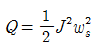
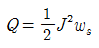
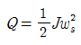
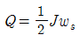
(정답률: 71%)
13. 200W는 약 몇 cal/s 인가?
- 0.2389
- 0.8621
- 47.78
- 71.67
(정답률: 75%)
14. 전지에서 자체 방전 현상이 일어나는 것으로 가장 옳은 것은?
- 전해액 온도
- 전해액 농도
- 불순물 혼합
- 이온화 경향
(정답률: 70%)
15. 자동제어에서 폐회로 제어계의 특징으로 틀린 것은?
- 정확성의 감소
- 감대폭의 증가
- 비선형과 왜형에 대한 효과의 감소
- 특성변화에 대한 입력 대 출력비의 감도 감소
(정답률: 55%)
16. 레일 대신 공중에 강삭(wire rope)를 가설하고 여기에 운반기(gondola)를 매달아서 사람 또는 물건을 운반하는 시설을 무엇이라 하는가?
- 가공 삭도
- 트롤리 버스
- 케이블카
- 모노레일
(정답률: 61%)
17. 권상하중 40t, 권상속도 12m/min의 기중기용 전동기의 용량은 약 몇 kW인가? (단, 전동기를 포함한 기중기의 효율은 60%이다.)
- 800
- 278.9
- 189.8
- 130.7
(정답률: 60%)
18. 다음 광원 중 루미네슨스에 의한 발광 현상을 이용하지 않는 것은?
- 형광등
- 수은등
- 백열전구
- 네온전구
(정답률: 63%)
19. 리드레일(lead-rail)에 대한 설명으로 옳은 것은?
- 열차가 대피궤도로 도입되는 레일
- 전철기와 철차와의 사이를 연결하는 곡선 레일
- 직선부에서 하단부로 변화하는 부분의 레일
- 직선부에서 경사부로 변화하는 부분의 레일
(정답률: 68%)
20. FL-20D 형광등의 전압이 100V, 전류가 0.35A, 안정기의 손실이 6W일 때 역률[%]은?
- 57
- 65
- 74
- 85
(정답률: 55%)
2과목: 전력공학
21. 송전계통에서 1선 지락 고장 시 인접 통신선의 유도장해가 가장 큰 중성점 접지 방식은?
- 비접지 방식
- 고저항 접지 방식
- 직접 접지 방식
- 소호 리액터 접지 방식
(정답률: 44%)
22. 저압 뱅킹 배전방식에서 캐스케이딩(cascading) 현상이란?
- 전압 동요가 적은 현상
- 변압기의 부하 분배가 균일하지 못한 현상
- 저압선의 고장에 의하여 건전한 변압기의 일부 또는 전부가 차단되는 현상
- 저압선이나 변압기의 고장이 생기면 자동적으로 고장이 제거되는 현상
(정답률: 55%)
23. 복도체를 사용하면 송전용량이 증가하는 주된 이유로 알맞은 것은?
- 코로나가 발생하지 않는다.
- 전압강하가 적어진다.
- 선로의 작용 인덕턴스는 감소하고 작용 정전용량이 증가한다.
- 무효전력이 적어진다.
(정답률: 52%)
24. 다음 중 보일러에서 흡수 열량이 가장 큰 것은?
- 수냉벽
- 과열기
- 절탄기
- 공기 예열기
(정답률: 48%)
25. 3상 3선식 가공송전선로가 있다. 전선 한가닥의 저항은 15Ω, 리액턴스는 20Ω이고 수전단의 선간전압은 30kV, 부하역률은 0.8(늦음)이다. 전압강하율을 5%로 하면 이 송전선로로 몇 kW까지 수전할 수 있는가?
- 1000
- 1500
- 2000
- 2500
(정답률: 24%)
26. 연가를 하는 주된 목적으로 옳은 것은?
- 선로정수의 평형
- 유도뢰의 방지
- 계전기의 확실한 동작 확보
- 전선의 절약
(정답률: 53%)
27. 초고압용 차단기에 사용되는 개폐저항기의 목적은?
- 차단속도 증진
- 차단전류 감소
- 차단전류의 역률 개선
- 개폐서지 이상전압 억제
(정답률: 46%)
28. 최대수용전력의 합계와 합성최대 수용전력의 비를 나타내는 계수는?
- 부하율
- 수용률
- 부등률
- 보상률
(정답률: 42%)
29. 가공지선에 대한 설명으로 틀린 것은?(오류 신고가 접수된 문제입니다. 반드시 정답과 해설을 확인하시기 바랍니다.)
- 직격뢰에 대해서는 특히 유효하며 전선 상부에 시설하므로 뇌는 주로 가공지선에 내습한다.
- 가공지선은 강연선, ACSR등이 사용된다.
- 차폐효과를 높이기 위하여 도전성이 좋은 전선을 사용한다
- 가공지선은 전선의 차폐와 진행파의 파고값을 증폭시키기 위해서이다.
(정답률: 24%)
30. 연간 최대전류 200A, 배전거리 10km의 말단에 집중 부하를 가진 6.6kV, 3상 3선식 배전선로가 있다. 이 선로의 연간 손실 전력량은 약 몇 MWh인가? (단, 부하율 F=0.6, 손실계수 H=03F+ 0.7F2이고, 전선의 저항은 0.25Ω/km이다.)
- 685
- 1135
- 1585
- 1825
(정답률: 34%)
31. 제 5고조파를 제거하기 위하여 전력용 콘덴서 용량의 몇 %에 해당하는 직렬리액터를 설치하는가?
- 2~3
- 5~6
- 7~8
- 9~10
(정답률: 53%)
32. 영상변류기를 사용하는 계전기는?
- 차동 계전기
- 접지 계전기
- 과전압 계전기
- 과전류 계전기
(정답률: 36%)
33. 단위 길이당 인덕턴스 및 커패시턴스가 각각 L및 C일 때 장거리 전송선로의 특성임피던스는?
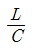
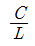
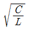
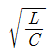
(정답률: 50%)
34. 수압철관의 안지름이 4m인 곳에서의 유속이 4m/s이었다. 안지름이 3.5m인 곳에서의 유속은 약 몇 m/s인가?
- 4.2
- 5.2
- 6.2
- 7.2
(정답률: 28%)
35. 현수애자 4개를 1련으로 한 66kV 송전선로가 있다. 현수애자 1개의 절연저항은 1500 MΩ, 이 선로의 경간이 200m라면 선로 1km당의 누설 컨덕턴스는 몇 ℧인가?(오류 신고가 접수된 문제입니다. 반드시 정답과 해설을 확인하시기 바랍니다.)
- 0.83×10-9
- 0.83×10-5
- 0.83×10-3
- 0.83×10-2
(정답률: 37%)
36. 3상 3선식에서 일정한 거리에 일정한 전력을 송전할 경우 선로에서의 저항손은?
- 선간전압에 비례한다.
- 선간전압에 반비례한다.
- 선간전압의 2승에 비례한다.
- 선간전압의 2승에 반비례한다.
(정답률: 38%)
37. 3상 3선식 송전선에서 바깥지름 20mm의 경동연선을 2m 간격으로 일직선 수평배치로 하여 연가를 하였을 때, 인덕턴스는 약 몇 mH/km인가?
- 1.16
- 1.32
- 1.48
- 1.64
(정답률: 25%)
38. 송배전 선로에 사용하는 직렬 콘덴서에 대한 설명으로 옳은 것은?
- 최대 송전전력이 감소하고 정태 안정도가 감소된다.
- 부하의 변동에 따른 수전단의 전압 변동률은 증대된다.
- 장거리 선로의 유도리액턴스를 보상하고 전압강하를 감소시킨다.
- 송수 양단의 전달 임피던스가 증가하고 안정 극한 전력이 감소한다.
(정답률: 51%)
39. 변전소에 분로리액터를 설치하는 주된 목적은?
- 진상무효전력 보상
- 전압강하 방지
- 전력손실 경감
- 잔류전하 방지
(정답률: 31%)
40. 차단기의 정격투입 전류란 투입되는 전류의 최초 주파의 어느값을 말하는가?
- 평균값
- 최대값
- 실효값
- 순시값
(정답률: 48%)
3과목: 전기기기
41. 3상 동기 발전기의 단자를 3상 단락하고 계자전류 200A를 흘린 경우 3상 단락전류는 280A 이었다. 계자전류를 250A로 증가 했을 때 3상 단락전류 [A]는?
- 300
- 330
- 350
- 370
(정답률: 33%)
42. 총 도체수 200, 단중 파권으로 자극수 4, 자속수 3.14Wb의 부하를 가하여 전기자에 3A가 흐르고 있는 직류 분권 전동기의 토크는 몇 Nm 인가?
- 600
- 500
- 400
- 300
(정답률: 34%)
43. 서보 모터가 갖추어야 할 조건이 아닌 것은?
- 기동 토크가 클 것
- 관성 모멘트가 클 것
- 가감속이 용이할 것
- 토크 속도 곡선이 수하특성을 가질 것
(정답률: 33%)
44. 권선형 유도전동기의 기동 시 2차 저항을 넣는 이유는?
- 기동 전류 증대
- 회전수 감소
- 기동 토크 감소
- 기동 전류 감소와 기동 토크 증대
(정답률: 49%)
45. 전원 200V, 부하 20Ω인 단상 반파정류회로의 부하전류는 약 몇 A인가?
- 9.4
- 8.7
- 5.5
- 4.5
(정답률: 40%)
46. 직류전압을 교류전압으로 변환하는 기기는?
- 인버터
- 정류기
- 초퍼
- 싸이클로 컨버터
(정답률: 53%)
47. 1차전압 6900V, 1차 권선 3000회, 권수비 20의 변압기가 60Hz에 사용 될 때 철심의 최대자속 [Wb]은?
- 863×10-3
- 86.3×10-3
- 8.63×10-3
- 0.863×10-3
(정답률: 41%)
48. 동기 발전기의 돌발 단락전류를 제한하는 것은?
- 누설 리액턴스
- 역상 리액턴스
- 권선 저항
- 동기 리액턴스
(정답률: 42%)
49. 8극 60Hz, 3상 권선형 유도전동기의 전부하시의 2차 주파수가 3Hz, 2차 동손이 500W일 때 발생토크는 약 몇 인가? (단, 기계손은 무시한다.)
- 10.4
- 10.8
- 11.1
- 12.5
(정답률: 29%)
50. 변압기의 손실비와 최대효율을 나타내는 부하전류와의 관계는?
- 손실비가 커지면 부하전류가 작아진다.
- 손실비가 커지면 부하전류가 커진다.
- 손실비가 커지면 그 제곱에 비례하여 부하전류가 커진다.
- 부하전류는 손실비에 관계없다.
(정답률: 28%)
51. 변압기의 벡터도에서 2차 유도기전력을 나타내는 식은? (E2 : 2차 유도기전력, V2 : 2차 단자전압, I2 : 2차 전류 I0 : 여자전류, Z2 : 2차 권선의 임피던스이다.)
- E2=V2+I2Z2
- E2=V2-I2Z2
- E2=V2+(I2+I0)Z2
- E2=V2-(I2+I0)Z2
(정답률: 28%)
52. 리니어 모터(linear motor)에 대한 설명으로 옳지 않은 것은?
- 기어, 벨트 등 동력 변환기구가 필요 없고 직접 원운동이 얻어진다.
- 회전형 모터를 축 방향으로 잘라서 펼쳐 놓은 형상이다.
- 마찰을 거치지 않고 추진력이 얻어진다.
- 모터 자체의 구조가 간단하여 신뢰성이 높다.
(정답률: 31%)
53. 동기기의 안정도 향상에 유효하지 않은 것은?
- 관성 모멘트를 크게 할 것
- 단락비를 크게 할 것
- 속응 여자 방식으로 할 것
- 동기 임피던스를 크게 할 것
(정답률: 35%)
54. 가동 복권 발전기의 내부 결선을 바꾸어 직권 발전기로 사용하려면?
- 분권 계자를 단락시킨다.
- 분권 계자를 개방시킨다.
- 직권 계자를 단락시킨다.
- 직권 계자를 개방시킨다.
(정답률: 33%)
55. 직류기의 정류작용에서 전압정류를 하고자 한다. 어떻게 하여야 하는가?
- 계자를 이동시킨다.
- 보극을 설치한다.
- 탄소브러시를 단락시킨다.
- 환상권선을 분리시킨다.
(정답률: 45%)
56. 6상 회전변류기의 직류측 전압(Ed)와 교류측 전압(Ea)의 실효값과의 비
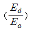
는?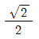
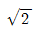
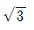
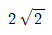
(정답률: 24%)
57. 2차 저항과 2차 리액턴스가 0.04Ω, 0.06Ω인 3상 유도전동기의 슬립이 4%일 때 1차 부하전류가 10A 이었다면 기계적 출력은 약 몇 kW인가? (단, 권선비 α=2, 상수비 β=1 이다.)
- 0.57
- 0.85
- 1.15
- 1.35
(정답률: 27%)
58. 3상 직권 정류자 전동기의 중간 변압기는 고정자 권선과 회전자 권선 사이에 직렬로 접속되는데 이 중간 변압기를 사용하는 중요한 이유는?
- 경부하시 속도의 급상승 방지를 위하여
- 주파수 변동으로 속도를 조정하기 위하여
- 회전자 상수를 감소하기 위하여
- 역회전을 방지하기 위하여
(정답률: 36%)
59. 10kVA, 2000/100V 변압기의 1차로 환산한 임피던스는 6.2+j7Ω이다. % 저항강하[%]는?
- 1.55
- 1.75
- 0.175
- 0.35
(정답률: 24%)
60. 2.2kW의 분권 전동기가 있다. 전압 110V, 전기자 전류 42A, 속도 1800rpm으로 운전 중에 계자전류 및 부하전류를 일정하게 두고 단자전압을 120V로 올리면 회전수[rpm]는? (단, 전기자 회로의 저항은 0.1Ω, 전기자 반작용은 무시한다.)
- 1440
- 1870
- 1970
- 2070
(정답률: 24%)
4과목: 회로이론
61. RLC 직렬회로에서 공진시의 전류는 공급전압에 대하여 어떤 위상차를 갖는가?
- 0°
- 90°
- 180°
- 270°
(정답률: 38%)
62. 다음 회로에서 10Ω의 저항에 흐르는 전류 [A]는?
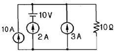
- 20
- 15
- 10
- 8
(정답률: 35%)
63. RL 직렬회로에 직류전압 E[V]를 어느 순간에 인가하였을 때 시정수의 5배의 시간에서는 정상 전류의 약 몇 %에 도달하는가?
- 93.3
- 95.3
- 97.3
- 99.3
(정답률: 31%)
64. 그림과 같은 주기 전압파에 있어서 0으로부터 0.02초의 사이에서는 e=5×104(t-0.02)2[V]로 표시되고 0.02초에서부터 0.04초 까지는 e=0이다. 전압의 평균치[V]는 약 얼마인가?
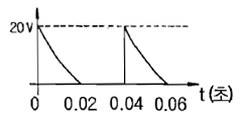
- 2.2
- 3.3
- 4
- 5.5
(정답률: 24%)
65. 기전력 3V, 내부저항 0.5Ω의 전지 9개가 있다. 이것을 3개씩 직렬로 하여 3조 병렬 접속한 것에 부하저항 1.5Ω을 접속하면 부하전류[A]는?
- 2.5
- 3.5
- 4.5
- 5.5
(정답률: 38%)
66. 입력신호가 Vi′, 출력신호가 V0일 때
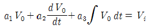
의 전달함수는?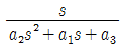
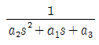
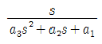
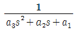
(정답률: 21%)
67. 복소전압
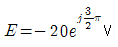
를 정현파의 순시값으로 나타내면 어떻게 되는가?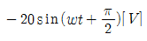
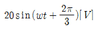
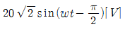
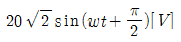
(정답률: 19%)
68. 3상 평형 부하가 있을 때 선전류 10A이고 부하의 전 소비전력이 4kW이다. 이 부하의 등가 Y 회로에 대한 각 상의 저항 [Ω]은?
- 40
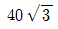
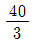
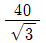
(정답률: 26%)

69. 3r[Ω]인 6개의 저항을 그림과 같이 접속하고 평형 3상 전압 V를 가했을 때 전류 I는 몇 [A]인가? (단,
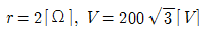
이다.)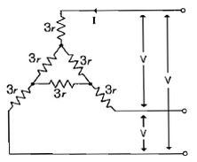
- 10
- 15
- 20
- 25
(정답률: 24%)
70. 그림에서 를 입력전압, 를 출력전압이라 할 때 전달함수는 어느 것인가?
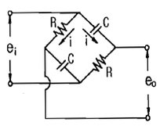
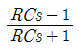
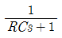
- RCs
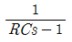
(정답률: 22%)
71. 코일에 단상 100V의 전압을 가하면 30A의 전류가 흐르고 1.8kW의 전력을 소비한다고 한다. 이 코일과 병렬로 콘덴서를 접속하여 회로의 역률을 100%로 하기 위한 용량 리액턴스는 약 몇 Ω인가?
- 4.2
- 6.2
- 8.2
- 10.2
(정답률: 24%)
72.
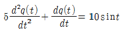
에서 모든 초기 조건을 0으로 하고 라플라스 변환하면? (단, Q(s)는 q(t)의 라플라스 변환이다.)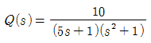
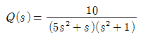
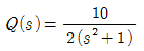
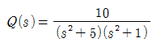
(정답률: 32%)
73. 그림과 같은 T형 회로에서 4단자 정수가 아닌 것은?
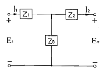
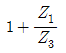
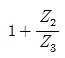
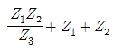
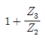
(정답률: 34%)
74. f(t)=3u(t)+2e-t의 라플라스 변환은?
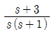
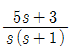
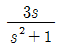
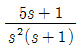
(정답률: 31%)
75. 임피던스 함수가
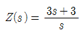
으로 표시되는 2단자 회로망은? (단, s=jw이다.)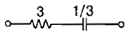
(정답률: 37%)
76. 10Ω의 저항 3개를 Y로 결선한 것을 등가 △결선으로 환산한 저항의 크기[Ω]는?
- 20
- 30
- 40
- 60
(정답률: 51%)
77. 상순이 a-b-c인 3상 회로에 있어서 대칭분 전압이 V0=-8+j3[V], V1=6-j8[V], V2=8+j12[V]일 때 a상의 전압 Va[V]는?
- 6+j7
- 8+j12
- 6+j14
- 16+j4
(정답률: 36%)
78. 다음 회로에서 전압비 전달함수 는 어떻게 되는가?
(정답률: 28%)
79. 그림과 같은; 회로에서 t=0의 순간 S를 열었을 때 L의 양단에 발생하는 역기전력은 인가전압의 몇 배가 발생하는가? (단, 스위치 S를 열기전에 회로는 정상상태이다.)
(정답률: 27%)
80. a+a2의 값은? (단, a=ej120°이다.)
- 0
- -1
- 1
- a3
(정답률: 27%)
5과목: 전기설비
81. 사용전압이 고압인 전로에만 사용되는 케이블은?
- 알루미늄피 케이블
- 클로로프렌 외장 케이블
- 비닐 외장 케이블
- 콤바인 덕트 케이블
(정답률: 36%)
82. 최대 사용전압 150V인 정류기는 몇 V의 절연내력 시험 전압에 견디어야 하는가?
- 1500
- 1650
- 1875
- 2250
(정답률: 24%)
83. 154kV 가공전선로를 제1종 특고압 보안공사에 의하여 시설하는 경우 전선에 지락 또는 단락이 발생하면 몇 초 이내에 자동적으로 이것을 전로로부터 차단하는 장치를 시설하여야 하는가?
- 1
- 2
- 3
- 5
(정답률: 24%)
84. 급경사지에 시설하는 전선로의 시설 중 옳지 않은 것은?
- 저압과 고압 전선로를 벼랑에 설치 시 저압전선로를 고압전선로 위에 시설한다.
- 전선에 사람이 접촉할 우려가 있는 곳에 시설하는 경우에는 적당한 방호장치를 시설한다.
- 전선은 케이블인 경우 이외에는 벼랑에 견고하게 붙인 금속제 완금류에 절연성 및 내수성의 애자로 지지한다.
- 전선의 지지점간 거리는 15m 이하로 한다.
(정답률: 37%)
85. 전기사용 장소의 옥내배선이 다음과 같이 시공되어 있었다. 잘못 시공된 것은?
- 애자사용 공사시 전선 상호간의 간격이 7cm로 되어 있었다.
- 라이팅 덕트의 지지점간 거리는 2m로 되어 있었다.
- 합성수지관 공사의 관의 지지점간의 거리가 2m로 되어 있었다.
- 금속관 공사로 시공하였고 절연전선이 사용되었다.
(정답률: 19%)
86. 제 2종 특고압 보안공사 시 B종 철주를 지지물로 사용하는 경우 경간은 몇 m 이하인가?
- 100
- 200
- 400
- 500
(정답률: 30%)
87. 저압 가공전선과 고압 가공전선을 동일 지지물에 시설하는 경우 저압 가공전선과 고압 가공전선과의 이격거리는 몇 cm 이상이어야 하는가?
- 40
- 50
- 60
- 70
(정답률: 26%)
88. 전로의 사용전압이 300V 초과 400V 미만인 경우의 절연저항값은 몇 MΩ 이상이어야 하는가?
- 0.1
- 0.2
- 0.3
- 0.4
(정답률: 42%)
89. 특고압 가공전선로에서 발생하는 극저주파 전자계는 지표상 1m에서 전계강도는 몇 kV/m 이하 이어야 하는가?
- 2.0
- 2.5
- 3.5
- 4.5
(정답률: 25%)
90. 사람이 상시 통행하는 터널안의 배선 시설로 적합하지 않은 것은?
- 사용전압은 저압에 한한다.
- 애자사용 공사에 의하여 시설하고 이를 노면상 2m 이상의 높이에 시설한다.
- 전로에는 터널입구에 가까운 곳에 전용 개폐기를 시설한다
- 공칭 단면적 2.5mm2 연동선과 동등 이상의 세기 및 굵기의 절연전선을 사용한다.
(정답률: 36%)
91. 백열전등 또는 방전등에 전기를 공급하는 옥내전로의 대지전압은 몇 V 이하이어야 하는가?
- 150
- 220
- 300
- 600
(정답률: 50%)
92. 연료전지 및 태양전지 모듈은 최대사용전압의 1.5배의 직류전압과 또는 몇 배의 교류전압을 충전부분과 대지사이에 연속하여 10분간 가하여 절연내력 시험을 하여 견디어야 하는가?
- 0.5
- 1.0
- 1.5
- 2.0
(정답률: 27%)
93. 저압 옥내전로의 인입구에 가까운 곳으로서 쉽게 개폐할 수 있는 곳에 개폐기를 시설하여야 한다. 그러나 사용전압이 400V 미만인 옥내전로로서 다른 옥내전로에 접속하는 길이가 몇 m 이하인 경우는 개폐기를 생략할 수 있는가?
- 10
- 15
- 20
- 25
(정답률: 27%)
94. 제 3종 접지공사의 특례에 따른 금속체와 대지간의 전기저항 값이 몇 Ω 이하인 경우에는 제 3종 접지공사를 한 것으로 보는가?
- 100
- 200
- 300
- 400
(정답률: 35%)
95. 시가지에 시설하는 170kV 이하인 특고압 가공전선로의 지지물이 철탑이고 전선이 수평으로 2이상 있는 경우에 전선 상호간의 간격이 4m 미만인 때에는 특고압 가공전선로의 경간은 몇 m 이하이어야 하는가?
- 100
- 150
- 200
- 250
(정답률: 20%)
96. 400V 미만의 저압용 계기용 변성기의 철심에는 몇 종 접지 공사를 하여야 하는가?
- 특별 제 3종 접지공사
- 제 1종 접지공사
- 제 2종 접지공사
- 제 3종 접지공사
(정답률: 42%)
97. 220V의 가공전선이 횡단보도교 위를 횡단할 때 최저 높이[m]는?
- 2.0
- 2.5
- 3.0
- 3.5
(정답률: 33%)
98. 특고압 전선로에 접속하는 배전용 변압기를 시설할 때 변압기의 1차 전압은 몇 kV이하 이어야 하는가? (단, 발전소, 변전소, 개폐소 또는 이에 준하는 곳은 제외)
- 30
- 35
- 40
- 45
(정답률: 34%)
99. 다음 중 전선로의 종류가 아닌 것은?
- 공간 전선로
- 수상 전선로
- 옥측 전선로
- 옥상 전선로
(정답률: 33%)
100. 교통신호등 회로의 사용전압은 몇 V 이하이어야 하는가?
- 110
- 220
- 300
- 380
(정답률: 47%)